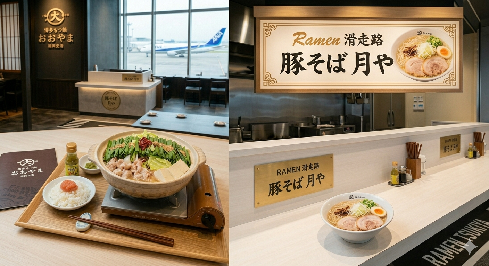
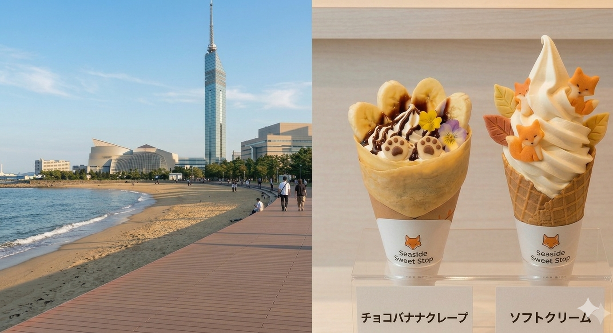

福岡は、都会の利便性と豊かな自然が共存するコンパクトシティです。博多ラーメンやもつ鍋などの絶品グルメ、天神・大名でのトレンド発信、そして少し足を伸ばせば海や山のリゾート感も味わえます。空港から中心部まで地下鉄で約5分という抜群のアクセスも大きな魅力です。
Start
1

12:00 福岡空港：絶品ランチ旅の始まりは空港グルメから。洗練された店内で福岡の味を堪能。
滞在時間 60分
🚃🚌
地下鉄とバスで約40分
2

14:30 シーサイドももち海風を感じながら、人気のクレープやソフトクリームでリフレッシュ。
滞在時間 45分
🚶
徒歩すぐ
3
16:00
福岡タワー
地上123mの展望室から、刻々と変わる福岡の街並みを一望。
滞在時間 60分
🚌
バスで約20分
4
 18:30
天神：大人の隠れ家ディナー
18:30
天神：大人の隠れ家ディナー
落ち着いたビストロやイタリアンで、上質な夜のひとときを。
滞在時間 120分
🚃
地下鉄で約12分
5
21:00
福岡空港：国内線展望デッキ
旅の締めくくりは滑走路の夜景。宝石のような光に包まれる特別な時間。
滞在時間 30分
Goal